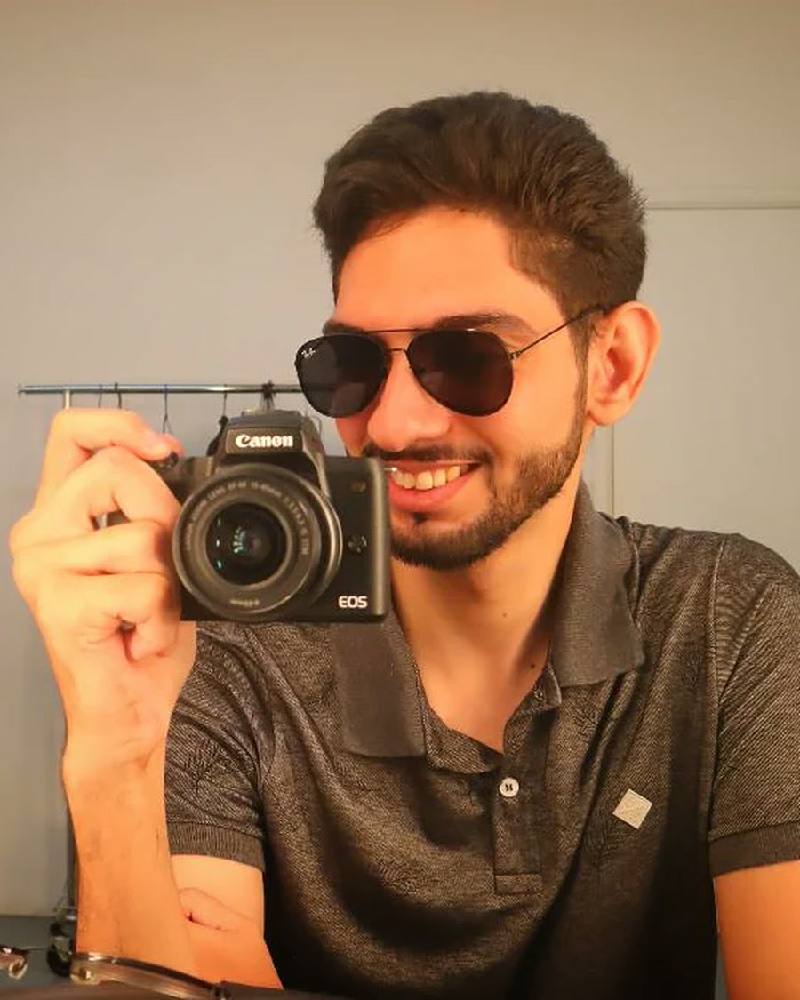

Videomaker · Editor · Cinegrafista — Itabuna e Ilhéus, Bahia
Captação em locação — entrevista, povo-fala e b-roll — com finalização em DaVinci Resolve. Programas de TV, documentários e coberturas de evento. Abaixo, os trabalhos publicados.
Me chamo Raul — todo mundo me conhece como Raulzito. Moro em Itabuna e atendo Itabuna e Ilhéus. Levanto a pauta no lugar, gravo entrevista e b-roll, e volto pra ilha de edição com o material inteiro na mochila.
Fui responsável por gravação, direção de imagem e edição de programas exibidos na TV Conexões — A Estação do Saber, entre eles a série Conecta Voz. Também assino documentários, institucionais, vinhetas e conteúdo para a marca VEM COMIGO Travel.
Também tenho experiência em transmissão ao vivo: sei operar e já trabalhei nas transmissões da série Conecta Voz. Não disponho de estrutura própria de transmissão — atuo na operação, com o equipamento da produção.

assets/raulzito.jpg